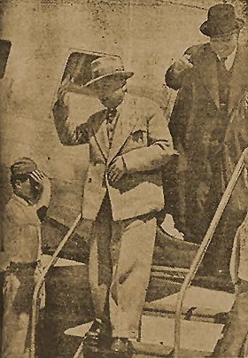

|
j
a v a s c r i p t |
May 16, 1944
A man running an ice-cream plant goes to Meycawayan to buy milk every day. A PC man stopped his truck recently and asked for money. While patting his wallet pocket and toying with his gun, it went off, narrowly missing our friend's leg. He got his bribe — and you get an idea how the PC makes a living these days. Yet the government is going to fix the price of rice in outlying guerilla-infested provinces by using the PC. Let's look at this new plan — the FA's Order No.34 and Executive Order No.55. Combined they mean:
This will give the Japanese a great buying advantage even without breaking the law. In Tarlac, for example, the Japanese can offer P100 in cash plus, say, P35 worth of textiles at fixed prices. The seller gets P100 plus textiles that are actually worth P500 to P700 in the black market. The Japanese have already paid P380 a sack in Tarlac by kicking in cigarettes, matches and lard. Our government will only pay a flat P135. Splashes: "Every problem we are failing to solve brings us face to face with a greater problem." Amen. In the Bay are some 36 merchantmen, including some very large ships. They remain outside the breakwater except when loading or unloading. A report spreading like wildfire says they are loading sugar, rice and meat. The fire in Azcarraga's bodegas a couple of Sundays ago destroyed P3-million of Primco goods easily worth P30-million at black market prices. Cigarettes, lard, matches, sugar, rice and textiles were burned.

Vargas, de las Alas deplaning
In an Australian broadcast, Frederic Marquardt, formerly of the Philippine Free Press, said that military currency would not be accepted after the war, but unforced transactions would probably be OK. I've been doing well lately brokering stock deals because people here are anxious to convert their military currency into more durable assets like stocks, real estate, or genuine currency. A certain neutral European country has even cabled its consulate advising its national firms not to sell any further goods. La Vanguardia prints a picture of a smiling Vargas and De las Alas deplaning from the Kalayaan yesterday. You can bet that both are happy to be out of Tokyo. |
|
|
|
|